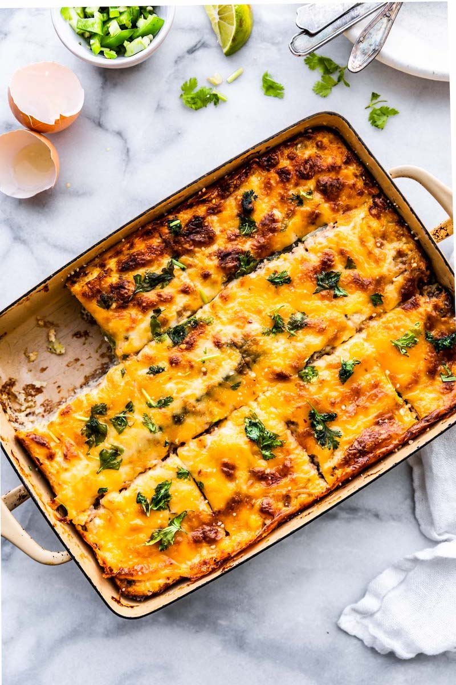

Cauli Breakfast Casserole

Cheesy Caulirice Casserole
This simple cauli rice breakfast casserole is easy to prepare on the weekend and heat up during the week for breakfast. The great part about this recipe is that it's entirely customizable to your liking.
Ingredients
- 6 eggs
- Bag of microwavable cauli rice
- 1 pound of breakfast sausage
- 1 Tbsp butter
- Salt and Pepper
- Shredded cheese
- Optional: Any veggies that you'd like, onions, bell peppers, jalepenos, tomatoes, etc...
Steps
- Start browning your sausage meat in a skillet, go ahead and add any veggies that you'd like cooked.
- In a bowl add in your 6 eggs with salt and pepper to taste, whisk them up.
- Microwave your cauli rice, when its done add it to a casserole dish with the butter, half of your shredded cheese, and some salt and pepper.
- Once your meat is browned, add it to the casserole dish along with the whisked eggs, make sure everything is smooth and distributed evenly with a spatula.
- Top with the rest of your shredded cheese and put it in the oven at 350 for about 20 minutes or until the eggs are cooked and the top cheese is browned to your liking.